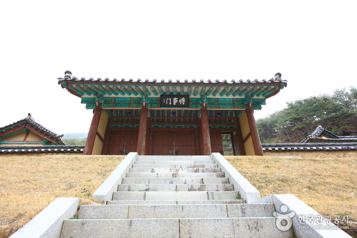
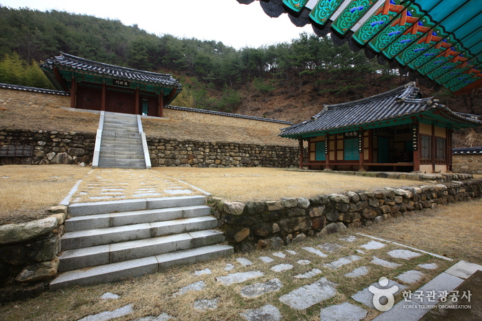
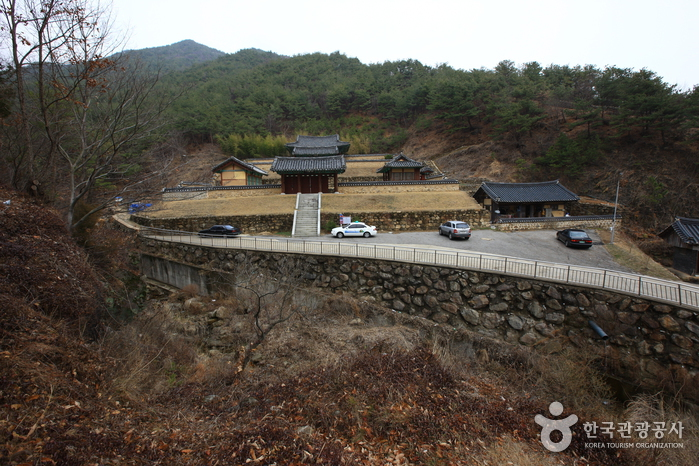

구례 석주관 칠의사묘
  
지역 : 전남 구례
설명 : 정유재란 때 석주관을 지키다 숨진 일곱 의사와 당시 구례 현감 이원춘의 묘가 있는 곳.
웹사이트 링크 1:
https://www.gurye.go.kr/board/view.do?bbsId=BBS_000000000000181&pageIndex=1&nttId=3708&menuNo=101005000000&searchCategory1=&searchCategory2=&searchCategory3=
웹사이트 링크 2:
https://place.map.kakao.com/10495312
웹사이트 링크 3:
https://goo.gl/maps/KsVcRh9Ykd9zBRLm7